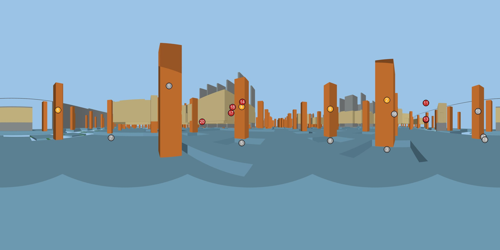
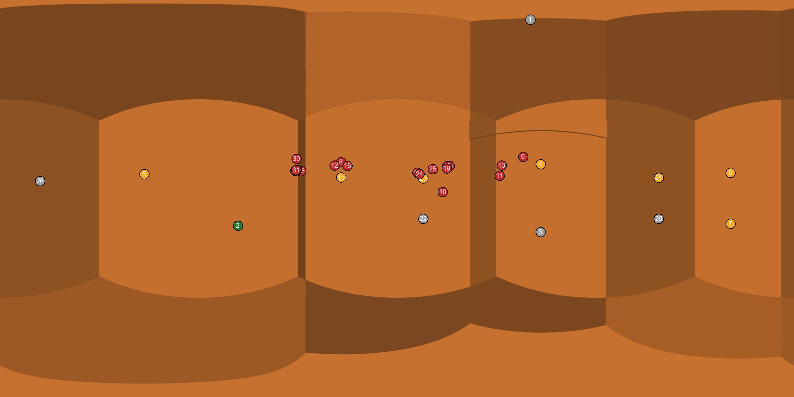

VID_20261031_122554_019 / t00000s
AI-estimated position (low confidence): an element may be one bay (about 6-8 m) off its marker. Markers are numbered; the table uses the same numbers.


| # | Element | Class | Discipline | Storey | Grid area | GUID | Dist. m | Status | Note | Also seen in |
|---|---|---|---|---|---|---|---|---|---|---|
| 2 | RC_Rectangular Columns:C(1000x2100)mm:618474 | IfcColumn | structure | HAC-SSL-FL2 | AFX.A-G/AFX.A-16 | 2Ip7HNHkH8QuUSM6MpN0WM | 5.3 | in progress | tall column rebar cage standing, red formwork panel at its edge | P02 clip 018 t=36s P05 clip 011 t=0s clip 018 t=0s clip 019 t=38s |
| 4 | RC_Rectangular Columns:C(1000x1000)mm:618385 | IfcColumn | structure | HAC-SSL-FL2 | AFX.A-I/AFX.A-17 | 2Ip7HNHkH8QuUSM6MpN0Xj | 7.4 | in progress | tall column rebar cage standing, red formwork panel at its edge | P01 P02 P07 clip 010 t=0s clip 010 t=20s clip 011 t=0s clip 018 t=60s clip 019 t=38s clip 020 t=0s clip 021 t=0s clip 021 t=28s |
| 6 | RC_Rectangular Columns:C(800x800)mm:618683 | IfcColumn | structure | HAC-SSL-FL2 | AFX.A-17/C | 2Ip7HNHkH8QuUSM6MpN1T7 | 8.3 | in progress | tall column rebar cage standing, red formwork panel at its edge | P01 P06 P07 clip 010 t=0s clip 010 t=20s clip 010 t=30s clip 018 t=60s clip 019 t=38s clip 021 t=28s |
| 9 | RC_Rectangular Columns:C(1000x1000)mm:618267 | IfcColumn | structure | HAC-SSL-FL2 | AFX.A-I/AFX.A-16 | 2Ip7HNHkH8QuUSM6MpN0Zd | 8.5 | in progress | tall column rebar cage standing, red formwork panel at its edge | P01 P02 P05 clip 010 t=0s clip 010 t=20s clip 010 t=30s clip 019 t=38s clip 020 t=0s |
| 11 | Basic Ceiling:DUMMY_CEILING_SIDE WALK:5535272 | IfcCovering | architecture | HAC-FFL-B2 | 17/C | 28nPXKW956gPEy4w0XWVgd | 9.7 | not started | architectural or slab-on-grade level: nothing built above the raft in this 360 | P01 P02 P03 clip 018 t=36s P04 P05 P06 P07 clip 010 t=0s clip 010 t=20s clip 010 t=30s clip 011 t=0s clip 011 t=14s clip 012 t=0s clip 012 t=4s clip 018 t=0s clip 018 t=60s |
| 12 | Floor:ABS-ARCH-FLOR-THICK SCREED_CSF-4 B02:3407162 | IfcSlab | architecture | HAC-FFL-B2 | 17/C | 2r$0QahBr7EhjklY0NS2DW | 9.7 | not started | architectural or slab-on-grade level: nothing built above the raft in this 360 | P01 P02 P03 clip 018 t=36s P04 P05 P06 P07 clip 010 t=0s clip 010 t=20s clip 010 t=30s clip 011 t=0s clip 011 t=14s clip 012 t=0s clip 012 t=4s clip 018 t=0s clip 018 t=60s |
| 13 | Floor:ABS-ARCH-FLOR-Epoxy Coating_EXP-01:3718454 | IfcSlab | architecture | HAC-FFL-B2 | 17/C | 0tCH0AsnrDWBdOEXejacs4 | 9.7 | not started | architectural or slab-on-grade level: nothing built above the raft in this 360 | P01 P02 P03 clip 018 t=36s P04 P05 P06 P07 clip 010 t=0s clip 010 t=20s clip 010 t=30s clip 011 t=0s clip 011 t=14s clip 012 t=0s clip 012 t=4s clip 018 t=0s clip 018 t=60s |
| 14 | M_Concrete-Rectangular Beam lintel :Concrete Lintel Beam 150*200 mm:4514968 | IfcBeam | architecture | HAC-FFL-B2 | E/AFX.A-17 | 3ozjNnfWv3kAEganCiJPbs | 10.6 | not started | architectural or slab-on-grade level: nothing built above the raft in this 360 | P01 P02 clip 010 t=0s clip 010 t=20s clip 011 t=0s clip 011 t=14s clip 018 t=60s clip 019 t=38s clip 020 t=0s clip 020 t=66s clip 021 t=0s clip 021 t=28s |
| 17 | HAC_AAR_DOR_METL_MD03:MD03 (2000X2200)mm:1965528 | IfcDoor | architecture | HAC-FFL-B2 | E/19 | 2eXGO8_nDBneVywKcBRI3t | 11.5 | not started | architectural or slab-on-grade level: nothing built above the raft in this 360 | P01 clip 010 t=0s clip 010 t=20s clip 019 t=38s clip 020 t=0s clip 020 t=66s clip 021 t=0s clip 021 t=28s |
| 18 | Basic Wall:HAC_A_WALL_BW_W04_300mm:1719164 | IfcWall | architecture | HAC-FFL-B2 | E/19 | 0MU4Dh0frDnvXV2sWWdFey | 11.7 | not started | architectural or slab-on-grade level: nothing built above the raft in this 360 | P01 clip 010 t=0s clip 010 t=20s clip 019 t=38s clip 020 t=0s clip 020 t=66s clip 021 t=0s clip 021 t=28s |
| 20 | Floor:150 mm THK.:1468401 | IfcSlab | structure | HAC-SSL-SG | AFX.A-I/AFX.A-18 | 2aiUILnHv4$h0UpsR0yca1 | 11.9 | not started | architectural or slab-on-grade level: nothing built above the raft in this 360 | clip 019 t=38s clip 020 t=0s clip 020 t=66s clip 021 t=0s clip 021 t=28s |
Not visible from here (9)
- 1. IfcColumn · RC_Rectangular Columns:C(800x800)mm:618426 · 2Ip7HNHkH8QuUSM6MpN0X6
- 3. IfcSlab · Foundation Slab:1000mm THK Foundation Slab:584432:40 · 0_KmFx3qttKdfqFN3hsh6n
- 5. IfcSlab · Foundation Slab:1000mm THK Foundation Slab:584432:34 · 2vH$jrDsuQ1R9X_qp2pMuD
- 7. IfcSlab · Foundation Slab:1700mm THK Tower Cranes:2948222 · 22J8uFbRj46P9YxwF6X6i_
- 8. IfcSlab · Foundation Slab:1000mm THK Foundation Slab:584432:33 · 13pyf5e9IYlLG7HNQ4BwGy
- 10. IfcColumn · RC_Rectangular Columns:C(1000x1000)mm:618731 · 2Ip7HNHkH8QuUSM6MpN1SN
- 15. IfcBeam · RC_Rectangular Beams:GB(300X1000):646549 · 34M8DLIf5DehrtLoKQzA6y
- 16. IfcColumn · RC_Rectangular Columns:C(1000x1000)mm:618073 · 2Ip7HNHkH8QuUSM6MpN0cb
- 19. IfcBeam · RC_Rectangular Beams:PC 50mm:996776 · 2VG9KaZu15AgEfkEGgH3_2
Same spot elsewhere: P02 (1.4 m) clip 018 t=60s (1.4 m) clip 010 t=30s (2.7 m) P01 (2.8 m) clip 010 t=0s (2.8 m) clip 010 t=20s (2.8 m) clip 019 t=38s (3.2 m) clip 020 t=0s (3.2 m) P07 (4.3 m) clip 021 t=0s (5.2 m) clip 020 t=66s (5.4 m) clip 018 t=36s (5.8 m) P06 (6.7 m) clip 021 t=28s (7.3 m)
Final comment. Tall tied column cages with red formwork panels at their edge. Nothing is built above the raft. Structure shown as not started is the slab-on-grade level above the raft.
VID_20261031_122554_019 / t00038s
AI-estimated position (low confidence): an element may be one bay (about 6-8 m) off its marker. Markers are numbered; the table uses the same numbers.


| # | Element | Class | Discipline | Storey | Grid area | GUID | Dist. m | Status | Note | Also seen in |
|---|---|---|---|---|---|---|---|---|---|---|
| 2 | Foundation Slab:1700mm THK Tower Cranes:2948222 | IfcSlab | structure | HAC-SSL-FL2 | 19/C | 22J8uFbRj46P9YxwF6X6i_ | 6.1 | complete | tower-crane mast stands on its cast base | P01 P02 clip 010 t=0s clip 010 t=20s clip 010 t=30s clip 021 t=28s |
| 4 | RC_Rectangular Columns:C(1000x1000)mm:618385 | IfcColumn | structure | HAC-SSL-FL2 | AFX.A-I/AFX.A-17 | 2Ip7HNHkH8QuUSM6MpN0Xj | 6.2 | in progress | lower lift cast or red formwork up, starter bars / cage for the next lift | P01 P02 P07 clip 010 t=0s clip 010 t=20s clip 011 t=0s clip 018 t=60s clip 019 t=0s clip 020 t=0s clip 021 t=0s clip 021 t=28s |
| 5 | RC_Rectangular Columns:C(800x800)mm:618683 | IfcColumn | structure | HAC-SSL-FL2 | AFX.A-17/C | 2Ip7HNHkH8QuUSM6MpN1T7 | 8.1 | in progress | lower lift cast or red formwork up, starter bars / cage for the next lift | P01 P06 P07 clip 010 t=0s clip 010 t=20s clip 010 t=30s clip 018 t=60s clip 019 t=0s clip 021 t=28s |
| 6 | RC_Rectangular Columns:C(1000x2100)mm:618474 | IfcColumn | structure | HAC-SSL-FL2 | AFX.A-G/AFX.A-16 | 2Ip7HNHkH8QuUSM6MpN0WM | 8.4 | in progress | lower lift cast or red formwork up, starter bars / cage for the next lift | P02 clip 018 t=36s P05 clip 011 t=0s clip 018 t=0s clip 019 t=0s |
| 7 | Foundation Slab:1000mm THK Foundation Slab:584432:40 | IfcSlab | structure | HAC-SSL-FL2 | AFX.A-G/AFX.A-16 | 0_KmFx3qttKdfqFN3hsh6n | 8.4 | in progress | raft rebar mat tied at the right | P01 P02 P05 P06 clip 010 t=0s clip 010 t=20s clip 010 t=30s clip 018 t=0s |
| 8 | Basic Wall:ABS-ARCH-WALL-Paint with plaster_PT-01:4778930 | IfcWall | architecture | HAC-FFL-B2 | AFX.A-G/AFX.A-18 | 0nYwlIw3vEBBi4_7qmvtU1 | 9.0 | not started | architectural or slab-on-grade level: nothing built above the raft in this 360 | clip 020 t=0s clip 020 t=66s clip 021 t=0s clip 021 t=28s clip 021 t=58s clip 022 t=0s |
| 9 | M_Concrete-Rectangular Beam lintel :Concrete Lintel Beam 150*200 mm:4514968 | IfcBeam | architecture | HAC-FFL-B2 | E/AFX.A-17 | 3ozjNnfWv3kAEganCiJPbs | 9.3 | not started | architectural or slab-on-grade level: nothing built above the raft in this 360 | P01 P02 clip 010 t=0s clip 010 t=20s clip 011 t=0s clip 011 t=14s clip 018 t=60s clip 019 t=0s clip 020 t=0s clip 020 t=66s clip 021 t=0s clip 021 t=28s |
| 10 | Floor:150 mm THK.:1468401 | IfcSlab | structure | HAC-SSL-SG | AFX.A-I/AFX.A-18 | 2aiUILnHv4$h0UpsR0yca1 | 9.3 | not started | architectural or slab-on-grade level: nothing built above the raft in this 360 | clip 019 t=0s clip 020 t=0s clip 020 t=66s clip 021 t=0s clip 021 t=28s |
| 11 | HAC_AAR_DOR_METL_MD03:MD03 (2000X2200)mm:1965528 | IfcDoor | architecture | HAC-FFL-B2 | E/19 | 2eXGO8_nDBneVywKcBRI3t | 9.7 | not started | architectural or slab-on-grade level: nothing built above the raft in this 360 | P01 clip 010 t=0s clip 010 t=20s clip 019 t=0s clip 020 t=0s clip 020 t=66s clip 021 t=0s clip 021 t=28s |
| 12 | Basic Wall:ABS-ARCH-WALL-Paint with plaster_PT-01:4779000 | IfcWall | architecture | HAC-FFL-B2 | D/20 | 0nYwlIw3vEBBi4_7qmvtVB | 9.9 | not started | architectural or slab-on-grade level: nothing built above the raft in this 360 | clip 020 t=0s clip 020 t=66s clip 021 t=0s clip 021 t=28s clip 021 t=58s clip 022 t=0s |
| 13 | Basic Wall:HAC_A_WALL_BW_W04_300mm:1719164 | IfcWall | architecture | HAC-FFL-B2 | E/19 | 0MU4Dh0frDnvXV2sWWdFey | 10.0 | not started | architectural or slab-on-grade level: nothing built above the raft in this 360 | P01 clip 010 t=0s clip 010 t=20s clip 019 t=0s clip 020 t=0s clip 020 t=66s clip 021 t=0s clip 021 t=28s |
| 14 | RC_Rectangular Columns:C(200x200)mm:3062295 | IfcColumn | architecture | HAC-FFL-B2 | AFX.A-I/AFX.A-18 | 01QBEi_Pb3_hyTt4pIJEHW | 10.0 | not started | architectural or slab-on-grade level: nothing built above the raft in this 360 | clip 020 t=0s clip 020 t=66s clip 021 t=0s clip 021 t=28s |
| 15 | RC_Rectangular Columns:C(1000x2100)mm:618536 | IfcColumn | structure | HAC-SSL-FL2 | AFX.A-G/20 | 2Ip7HNHkH8QuUSM6MpN1VK | 10.0 | in progress | lower lift cast or red formwork up, starter bars / cage for the next lift | clip 020 t=0s clip 020 t=66s clip 021 t=58s clip 022 t=0s |
| 16 | Basic Wall:ABS-ARCH-WALL-Paint with plaster_PT-01:4778868 | IfcWall | architecture | HAC-FFL-B2 | AFX.A-G/20 | 0nYwlIw3vEBBi4_7qmvtT7 | 10.0 | not started | architectural or slab-on-grade level: nothing built above the raft in this 360 | clip 020 t=0s clip 020 t=66s clip 021 t=0s clip 021 t=28s clip 021 t=58s clip 022 t=0s |
| 17 | Basic Wall:HAC_A_WALL_BW_W02_200mm:1719100 | IfcWall | architecture | HAC-FFL-B2 | AFX.A-I/AFX.A-18 | 0MU4Dh0frDnvXV2sWWdFfy | 10.2 | not started | architectural or slab-on-grade level: nothing built above the raft in this 360 | clip 020 t=0s clip 020 t=66s clip 021 t=0s clip 021 t=28s |
| 18 | Basic Wall:ABS-ARCH-WALL-Electrostatic Paint On Cement Plaster_PT-02:1709749 | IfcWall | architecture | HAC-FFL-B2 | AFX.A-18/AFX.A-I | 01AyYa$nzFxuA2ijPV6n2r | 10.3 | not started | architectural or slab-on-grade level: nothing built above the raft in this 360 | clip 020 t=0s clip 020 t=66s clip 021 t=0s clip 021 t=28s |
| 19 | Basic Wall:ABS-ARCH-WALL-Paint with plaster_PT-01:3524651 | IfcWall | architecture | HAC-FFL-B2 | E/AFX.A-18 | 3zCNJtk8bEsO7YXtcjhyfR | 10.4 | not started | architectural or slab-on-grade level: nothing built above the raft in this 360 | clip 020 t=0s clip 020 t=66s clip 021 t=0s clip 021 t=28s |
| 21 | RC_Rectangular Columns:C(1000x1000)mm:618267 | IfcColumn | structure | HAC-SSL-FL2 | AFX.A-I/AFX.A-16 | 2Ip7HNHkH8QuUSM6MpN0Zd | 10.4 | in progress | lower lift cast or red formwork up, starter bars / cage for the next lift | P01 P02 P05 clip 010 t=0s clip 010 t=20s clip 010 t=30s clip 019 t=0s clip 020 t=0s |
| 23 | RC_Rectangular Columns:C(1000x1000)mm:618595 | IfcColumn | structure | HAC-SSL-FL2 | AFX.A-I/AFX.A-18 | 2Ip7HNHkH8QuUSM6MpN1UV | 10.5 | in progress | lower lift cast or red formwork up, starter bars / cage for the next lift | clip 020 t=0s clip 020 t=66s clip 021 t=0s clip 021 t=28s |
| 24 | Basic Wall:ABS-ARCH-WALL-Electrostatic Paint On Cement Plaster_PT-02:1709748 | IfcWall | architecture | HAC-FFL-B2 | AFX.A-I/AFX.A-18 | 01AyYa$nzFxuA2ijPV6n2q | 10.9 | not started | architectural or slab-on-grade level: nothing built above the raft in this 360 | clip 020 t=0s clip 020 t=66s clip 021 t=0s clip 021 t=28s |
| 25 | Basic Wall:ABS-ARCH-WALL-Paint with plaster_PT-01:4786472 | IfcWall | architecture | HAC-FFL-B2 | AFX.A-18/E | 1UqirTS450AOwvOXTlAFex | 11.3 | not started | architectural or slab-on-grade level: nothing built above the raft in this 360 | clip 020 t=0s clip 020 t=66s clip 021 t=0s clip 021 t=28s |
| 27 | Basic Wall:ABS-ARCH-WALL-Paint with plaster_PT-01:4777393 | IfcWall | architecture | HAC-FFL-B2 | 20/S | 0nYwlIw3vEBBi4_7qmvtc2 | 11.5 | not started | architectural or slab-on-grade level: nothing built above the raft in this 360 | clip 020 t=0s clip 020 t=66s clip 021 t=0s clip 021 t=28s clip 021 t=58s clip 022 t=0s clip 022 t=30s |
| 28 | Basic Wall:ABS-ARCH-WALL-Paint with plaster_PT-01:3518530 | IfcWall | architecture | HAC-FFL-B2 | 20/D | 1OamUyK_P7987z59NRCNdj | 11.6 | not started | architectural or slab-on-grade level: nothing built above the raft in this 360 | clip 020 t=0s clip 020 t=66s clip 021 t=0s clip 021 t=28s clip 021 t=58s clip 022 t=0s clip 022 t=30s |
| 29 | Basic Wall:HAC_A_WALL_BW_W02_200mm:1727533 | IfcWall | architecture | HAC-FFL-B2 | 20/S | 0Y5ylc7Ln1jOaKGTZDhH1i | 11.6 | not started | architectural or slab-on-grade level: nothing built above the raft in this 360 | clip 020 t=0s clip 020 t=66s clip 021 t=0s clip 021 t=28s clip 021 t=58s clip 022 t=0s clip 022 t=30s |
| 30 | M_Concrete-Rectangular Beam lintel :Bond Beam 200*400 mm:3156972 | IfcBeam | architecture | HAC-FFL-U2B2 | 20/S | 2_MuvtsaLDhOKpmRWrjGxm | 11.6 | not started | architectural or slab-on-grade level: nothing built above the raft in this 360 | clip 020 t=0s clip 020 t=66s clip 021 t=0s clip 021 t=28s clip 021 t=58s clip 022 t=0s clip 022 t=30s |
| 31 | RC_Rectangular Columns:C(200x200)mm:3061790 | IfcColumn | architecture | HAC-FFL-B2 | 20/S | 01QBEi_Pb3_hyTt4pIJEPf | 11.6 | not started | architectural or slab-on-grade level: nothing built above the raft in this 360 | clip 020 t=0s clip 020 t=66s clip 021 t=0s clip 021 t=28s clip 021 t=58s clip 022 t=0s clip 022 t=30s |
Not visible from here (5)
- 1. IfcColumn · RC_Rectangular Columns:C(800x800)mm:618426 · 2Ip7HNHkH8QuUSM6MpN0X6
- 3. IfcSlab · Foundation Slab:1000mm THK Foundation Slab:584432:34 · 2vH$jrDsuQ1R9X_qp2pMuD
- 20. IfcSlab · Foundation Slab:1000mm THK Foundation Slab:584432:33 · 13pyf5e9IYlLG7HNQ4BwGy
- 22. IfcSlab · Foundation Slab:1000mm THK Foundation Slab:584432:35 · 2JOwQx1aScR_9DdOoMrnQO
- 26. IfcColumn · RC_Rectangular Columns:C(1000x1000)mm:618731 · 2Ip7HNHkH8QuUSM6MpN1SN
Same spot elsewhere: clip 020 t=0s (0.0 m) clip 021 t=0s (2.1 m) clip 020 t=66s (2.2 m) clip 019 t=0s (3.2 m) clip 021 t=28s (4.2 m) clip 018 t=60s (4.5 m) P02 (4.5 m) P01 (5.3 m) clip 010 t=0s (5.3 m) clip 010 t=20s (5.3 m) clip 010 t=30s (5.8 m) P07 (7.3 m)
Final comment. Cast lower lifts and red formwork with cages or starter bars for the next lift, raft mat tied at the right, and the crane mast on its cast base. Structure shown as not started is the slab-on-grade level above the raft.